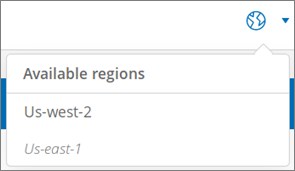

Selecting the region Edit on GitHub Request doc changes
Cloud Volumes Service is available in several AWS regions, but the user interface (UI) is specific to a region. You must specify the region where you want to use the service before you create a cloud volume.
Steps
-
Navigate to the NetApp Cloud Orchestrator site, and then log in with the email address that you provided during your subscription.
You should bookmark this URL. You will need to return to it later.
-
From the Available regions drop-down menu in the top panel, select the region that you want to work in.
This selection process is similar to how you change regions in the AWS console.
 -
Repeat the above step for each additional region you want to use.